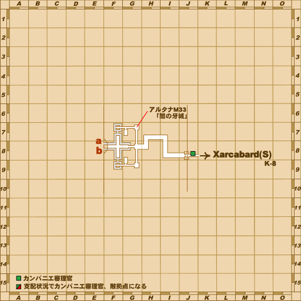
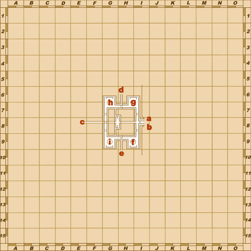
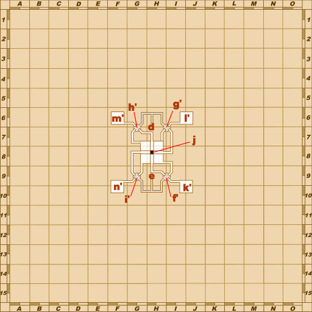
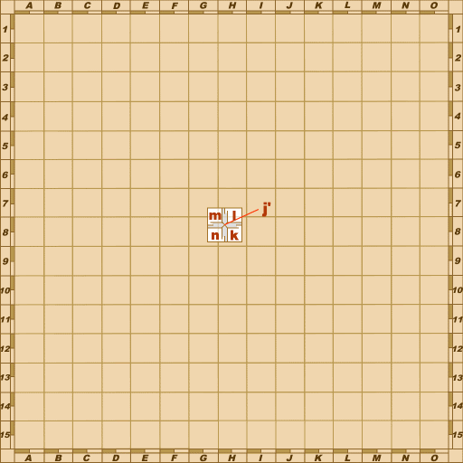
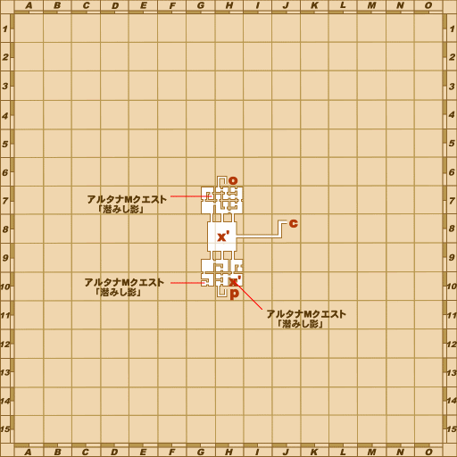
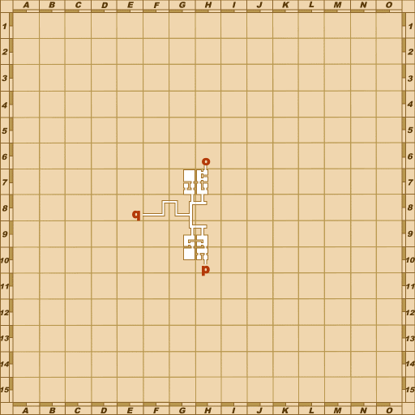
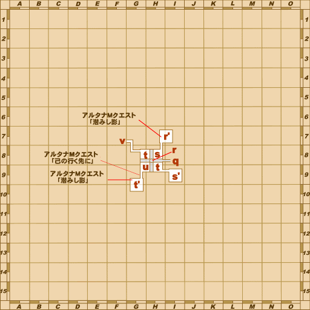
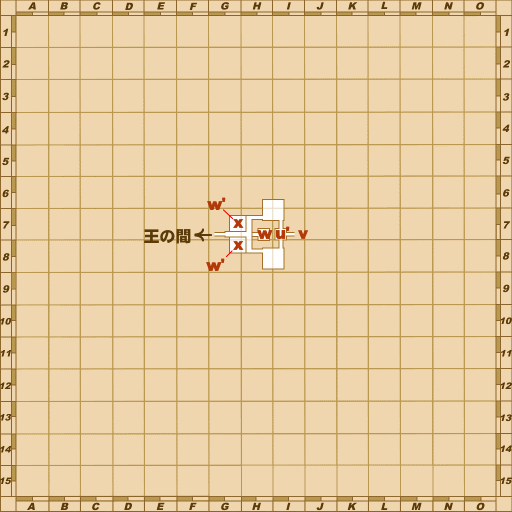

Before you begin
- Complete B-11: The Truth Lies Hid.
- Reach WotG 38: Adieu, Lilisette.
- Keep the Sanctus Rosary and prepare a party for the open-area monster and final reference battle.
Starting point
Main entrance from Castle Zvahl Keep [S] · Castle Zvahl Baileys [S]
People in this mission


Walkthrough
- Leave Castle Zvahl Keep [S] through its main entrance into Castle Zvahl Baileys [S] for the opening scene. Then return to the Keep.
- Use the teleporters to reach the southwest room at G-9 on Keep map 3. Examine the ??? for a scene.
- Return to that map’s central room and defeat all four Keep Imps after the scene. Kills made before it do not count.
- Examine the ??? again to spawn Gargouille Warden. Defeat it, then examine the ??? once more to receive the Zvahl Passkey.
- Enter Throne Room [S] and examine the Throne Room door for a scene. In the complete reference route, examine the door again to enter Bonds of Mythril.
- First defeat Klara while keeping your allied Zeid alive. Prepare to remove petrification and curse from her special sword attacks. Zeid’s defeat ends the attempt.
- Then defeat Marquis Amon. Equip the Sanctus Rosary to block the Doom associated with its draw-in attack, and prepare to heal through area magic. Both phases share the reference battle’s 30-minute limit.
- After victory, speak with Gentle Tiger in Bastok Markets [S]. Finish the linked scenes through present-day Metalworks and North Gustaberg [S] to receive the Excelsis Ring.
Battle and progress notes
- Gargouille Warden resists magical damage and adds stun to melee hits; prepare for a sustained physical fight.
- All participants in the reference Throne Room encounter must be on this quest or have completed it. Live eligibility and Trust behavior remain unverified.
- After completion, Naji in present-day Metalworks offers optional closing dialogue. Modern Trust and Atma rewards are outside this level-75 guide.
Completion and reward
Intended: Excelsis Ring; Temperer of Mythril title.
What this opens
- The Bastok route’s requirement for continuing WotG 38: Adieu, Lilisette
- Completion of the Bastok [S] national storyline
Area maps
Open a zone below, then select a map to enlarge it. Match the named floors and grid coordinates in the steps; these are reference area maps, not a live position tracker.
Castle Zvahl Baileys (S)








Castle Zvahl Keep (S)








Bastok Markets (S)


Metalworks


North Gustaberg (S)

Zone guides
- Castle Zvahl Baileys (S)
- Castle Zvahl Keep (S)
- Throne Room (S)
- Bastok Markets (S)
- Metalworks
- North Gustaberg (S)
- Throne Room
References
Steps are an original summary of the linked walkthrough and reviewed source. Other servers’ bonus rewards are not included. How to read requirements, waits and battlefield notes.